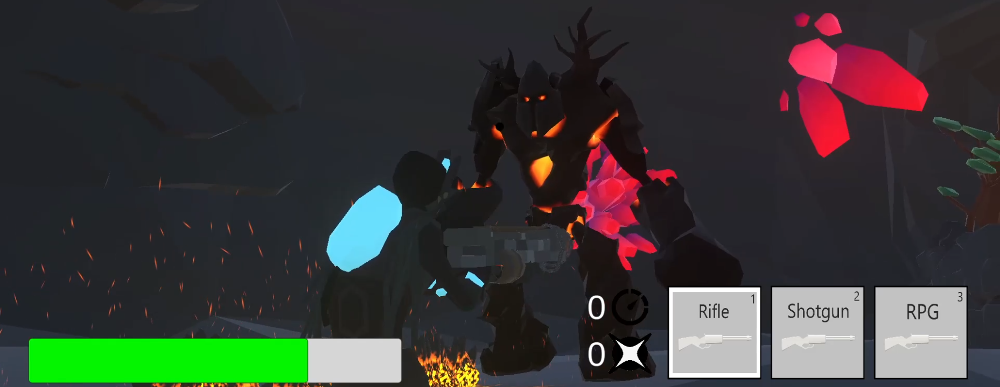

Elemental Dude
My first Game Development project in Unity3D was: Elemental Dude. To get us inspired we were given the scentence: "Start from nothing". Our game had to represent this scentence. So we took some inspiration from Risk of Rain 2 and made Elemental Dude.
In this game the player traverses expansive caves. Every cave has it's own element and at the end you will find the elemental boss. After killing the boss you can use his element on one of your own guns and grow stronger.